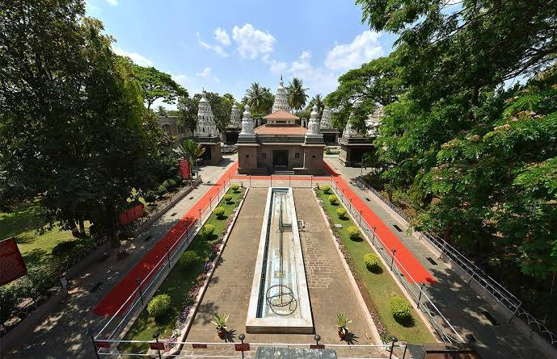
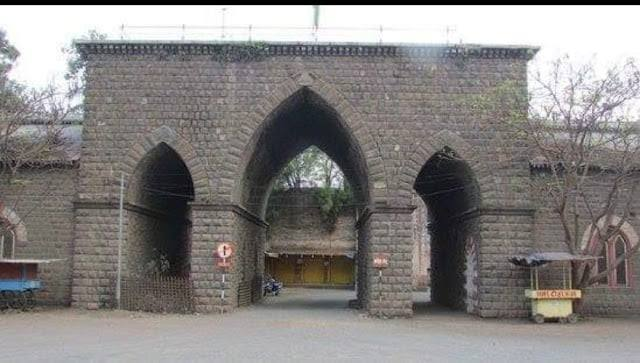
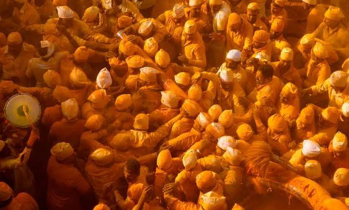
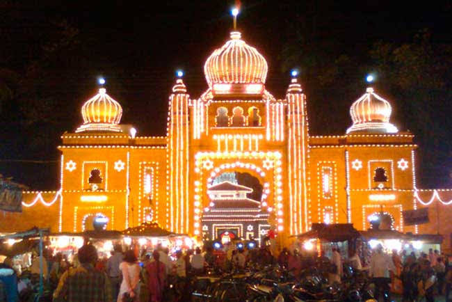
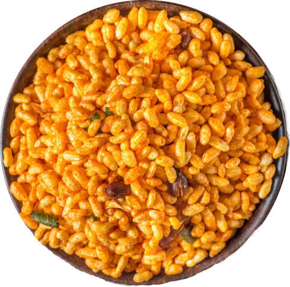
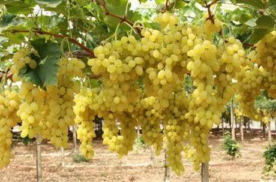
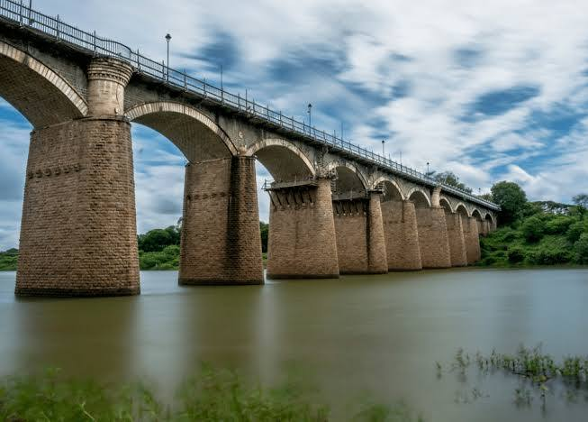
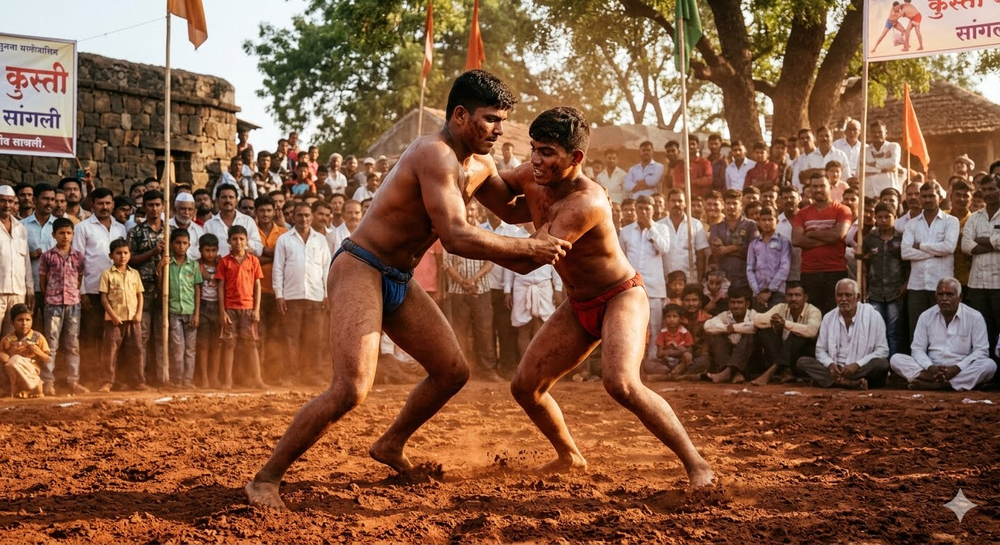

About

Sangli is a prominent city in western Maharashtra, situated along the Krishna River. Known as the "Yellow City" or Turmeric Capital of India, it hosts one of the world's largest turmeric trading markets. Additionally, the district serves as the "Sugar Bowl of India" due to its massive sugarcane production and extensive cooperative sugar factories
- Location: Western part of Maharashtra, India, sitting right on the banks of the Krishna River.
- Famous as: The "Turmeric Capital of India" and the birthplace of modern Marathi theatre.
- Major sectors: Agriculture (turmeric, grapes, and sugarcane), sugar mills, and manufacturing.
- Climate: Semi-arid climate with hot summers, rainy monsoons, and mild winters.
History

Sangli, located in southern Maharashtra along the Krishna River, is globally renowned as India's premier turmeric and sugar hub. With roots dating back to the Chalukya dynasty, it later emerged as a prominent princely state ruled by the Patwardhan family before formally joining the Republic of India
- Ancient Roots: Kundal
- Key Rulers: Chalukyas, Satavahanas, Marathas, and the Patwardhans
- Historic Sites: Sangli Ganapati Temple, Sangli Fort, and the Miraj Dargah
Culture

Sangli boasts a vibrant culture deeply rooted in theater, spirituality, and traditional sports. As the birthplace of Marathi drama, the city holds a legendary status in Indian art history, tracing its theatrical roots back to the first Marathi play staged here in 1843. Spiritual life revolves around the historic Sangli Ganapati Temple, which draws thousands of devotees and makes the Ganesh Chaturthi festival a grand, musical celebration across the community. Beyond arts and faith, Sangli maintains a proud heritage of Kusti (traditional Indian wrestling), where young athletes still train passionately in mud pits called Akhadas.
- Main Festivals: Ganesh Chaturthi: The biggest citywide celebration.Tasgaon Yatra: A massive chariot festival.Mhasoba Yatra: A popular rural fair.
- Traditional Arts: Marathi Drama: The city's famous theater art.Jakhdi Folk Dance: Rhythmic rural circle dancing.Tamasha: Energetic folk music and theater.Kusti: Traditional mud-pit Indian wrestling.
- Language:Marathi: The main official local language.Border Dialect: Spoken Marathi with Kannada words.
Tourism

Sangli is a beautiful travel spot in Maharashtra along the Krishna River. It is famous for its rich history and beautiful nature. Visitors love to see the famous Sangli Ganapati Temple and the historic Sangli Fort. Nature lovers can explore the wild animals at Sagareshwar Wildlife Sanctuary or hike in Chandoli National Park. The area is also known as the "Turmeric City" because it has massive spice markets and peaceful grape vineyards to see.
- Sangli Ganapati Temple: Black stone, riverbank, 19th-century
- Sangli Fort: Patwardhan rulers, museum, Darbar Hall
- Sagareshwar Wildlife Sanctuary: Man-made forest, deer, Shiva temples
- Chandoli National Park: Tiger reserve, trekking, waterfalls
Famous Food

Sangli food is a delicious mix of spicy Maharashtrian flavors and unique street treats. The city is world-famous for Bhadang, a crunchy snack made of spicy puffed rice, peanuts, and garlic that locals love to pack and export everywhere. For a hearty meal, visitors enjoy Bharli Wangi (stuffed eggplant) served with hot bhakri bread, or spicy Mutton Thalis influenced by nearby Kolhapur. The local streets are also alive with food lovers grabbing plates of tangy Sambha Bhel, steaming Vada Pav, and sweet jaggery-based desserts
- Famous dishes: Bhadang, Bharli Wangi, Mutton Thali, Sambha Bhel.
- Local Specialty: Spicy puffed rice, Kolhapuri meat curries, stuffed eggplant.
Economy

Sangli has a powerful economy driven by agriculture and trade. It is known as the "Turmeric City of India" because it houses Asia’s largest turmeric trading market. The region is also highly industrialized in farming, acting as a major sugar belt with numerous cooperative sugar factories. Beyond sugar and spices, Sangli is a massive hub for grape cultivation and high-quality wine production. Manufacturing, textile units, and silver jewelry processing in nearby areas like Hupari also heavily boost the local wealth.
- Key Industries: Turmeric trading, sugar processing, wine production, textile manufacturing, silver jewelry.
- Main Crops: Turmeric, grapes, sugarcane, soybeans, corn.
Environment

The environmental landscape of Sangli presents a striking contrast of nature, spanning from lush river basins to dry plains. The mighty Krishna River flows directly through the district for 105 kilometers, joining key feeding rivers like the Warana to create fertile black soil valleys ideal for farming sweet grapes and turmeric. While western regions like Shirala receive abundant rainfall and feature thick monsoon forests, eastern zones like Jat sit in a rain shadow area, resulting in hot, semi-arid desert-like grasslands prone to regular summer droughts. Despite experiencing modern challenges like seasonal flooding and water pollution from local industries, the area benefits from open geographic terrain that often rewards the city with some of the cleanest air quality indexes in the state
- Climate: Semi-arid with agricultural microclimates
- Key Rivers: Krishna River basin ecosystem
- Protected Areas: Sagareshwar Sanctuary and Chandoli forest lines
Sports

The sports culture of Sangli perfectly blends historic traditions with modern athletic facilities. The district is legendary for its deep-rooted passion for traditional mud wrestling (Kushti), housing historic training arenas (Talims) like the modern Vasantdada Kushti Kendra that shape champion athletes. Beyond the wrestling ring, the city thrives on modern games, utilizing the massive concrete stands of Chhatrapati Shivaji Maharaj Stadium and Tarun Bharat Stadium for competitive cricket leagues, track events, and field sports. Today, a new wave of sports energy has taken over the town, with young crowds flocking to premium, brightly lit artificial turf clubs like Pitch Perfect for fast-paced night football and box cricket, while modern multi-sport centers introduce rising trends like Pickleball and Padel tennis to the local community.
- Traditional Sports: Famous mud-pit wrestling (Kusti) legacy
- Key Venues: Local sports complexes and training Akhadas
- Focus: Athletics, local tournaments, and youth fitness development